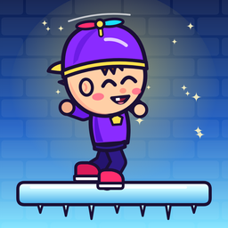

Icy Hop
Destek · Support
Soru, öneri ya da bir sorun bildirmek için bana e-posta gönderebilirsin. Genellikle 2 iş günü içinde yanıt veririm.
E-posta: neset.salik@gmail.com
For questions, feedback or bug reports, please email the address above. I usually reply within 2 business days.
Sık sorulan sorular
Oyun nasıl oynanır?
Pervane'yi sol alttaki ◀ ▶ tuşlarıyla yönlendir, sağ alttaki tuşla zıpla. Amaç kuleden olabildiğince yükseğe çıkmak. Bir süre sonra ekran kendiliğinden yukarı kaymaya başlar ve zamanla hızlanır; ekranın altında kalırsan oyun biter. İstersen Ayarlar'dan kaydırmalı kontrole geçebilirsin.
Nasıl daha yükseğe zıplarım?
Ne kadar hızlı koşarsan o kadar yükseğe zıplarsın. Bir yönde koşarak hız kazan, sonra zıpla. Duvara çarptığında sekerek yön değiştirebilir, hızını koruyabilirsin.
Combo nasıl çalışır?
Tek zıplayışta en az 2 kat atlarsan combo başlar. 3 saniye içinde yine çok katlı bir zıplayış yaparsan combo sürer ve çarpan büyür. Combo bittiğinde atladığın toplam kat sayısının karesi kadar bonus puan alırsın.
Dünyalar nasıl açılır?
Her 100 katta yeni bir dünyaya geçersin: Buz Krallığı, Antik Tapınak, Büyülü Orman, Volkan Kulesi ve Geleceğin Şehri. Bir dünyaya bir kez ulaştığında, ana menüdeki Dünyalar ekranından oradan başlayabilirsin. Skor, başladığın kattan itibaren sayılır.
Reklamlar ne zaman çıkar?
Oyun sırasında asla. Oyun bittiğinde isteğe bağlı bir reklam izleyerek kaldığın yerden bir kez devam edebilirsin. Bazı oyun sonlarında, sınırlı sıklıkta kısa bir geçiş reklamı gösterilebilir; ilk oyunlarında gösterilmez.
İlerlemem kayboldu mu?
Rekorların, açtığın dünyalar ve başarımların cihazında otomatik kaydedilir. Uygulamayı silersen kayıt da silinir.
Sesi, müziği ya da titreşimi nasıl kapatırım?
Ana menünün sağ üstündeki Ayarlar düğmesinden ya da oyun sırasında duraklat menüsündeki müzik ve ses düğmelerinden.
Reklam izinlerimi nasıl değiştiririm?
Avrupa'daysan Ayarlar ekranındaki "Gizlilik Seçenekleri" düğmesinden. iPhone'da Ayarlar → Gizlilik ve Güvenlik → İzleme bölümünden; Android'de reklam kimliğini telefonunun Ayarlar → Gizlilik → Reklamlar bölümünden sıfırlayabilirsin.